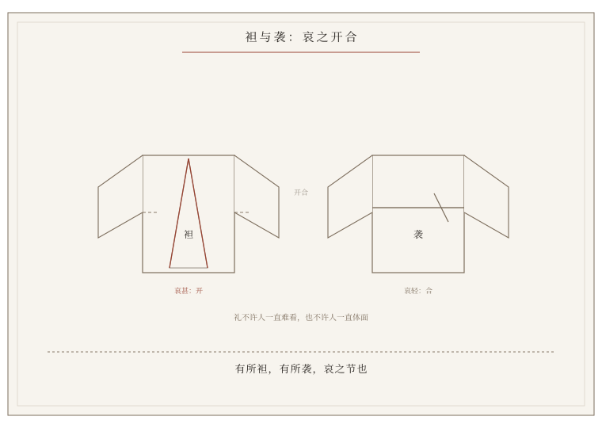

檀弓下 · 四·二十一 · 第 346 课
袒、括发，变也。愠，哀之变也。去饰，去美也。袒、括发，去饰之甚也。有所袒，有所袭，哀之节也。
说什么事：袒衣露臂、束发去冠，是形貌之变；愠怒郁结，是哀情之变。去饰，就是去美；而袒括发，又是去饰中最甚的一种。所以有袒的时候，也有袭（穿好）的时候——这就是哀的节度。
落在哪一层：以「变」量礼。论「礼不禁止人的失常，只给它开合的时辰」。
为何编在此位：上节论「数量」，此节论「开合」。数管其数，节管其时。
【经】袒、括髮，變也。慍，哀之變也。去飾，去美也。袒、括髮，去飾之甚也。有所袒，有所襲，哀之節也。
【注】（此章无注，经文自释。）
【疏】言袒衣括发者，是孝子形貌之变也。悲哀愠恚者，是孝子哀情之变也。／去其寻常吉时服饰也者，是去其华美也。孝子去饰，虽有多涂，袒括发者，就去饰之中，最为甚也。／孝子悲哀，理应常袒，何以有所袒、有所袭时者，表明哀之限节，哀甚则袒，哀轻则袭。
袒 解开上衣，露出左臂。
括发 束发。去冠而束之，以麻束发。
变 反常之状。与常服、常容相对。
愠 郁结、愤懑。注音有「积也」「怨恚也」两读。
去饰 去掉装饰。
袭 穿好衣服，与「袒」相对。
袒衣束发，是形貌之变。郁结愤懑，是哀情之变。去掉装饰，就是去掉华美。而袒衣束发，又是去饰中最甚的一层。所以有袒的时候，也有袭的时候——这就是哀的节度。
此章四句，前四言「变」，后一言「节」。而紧要处在最后六字：「有所袒，有所袭。」
若只言「变」，则孝子当常袒、常垢、常毁；而礼曰不然：袒有时，袭有时。故「变」在礼中，从来不是一个方向，是两个方向。
第一层 形与情，两种变 袒括发是形貌之变，愠是哀情之变。
礼承认这两种变都真实：人遭大丧，容貌必改，情绪必乱。礼不劝你「保持常态」，因为那不可能，也是假。
礼所做的是：把这两种变都纳入可开可合之节。
第二层 「去饰之甚」：礼容许人难看 孝子居丧，蓬首垢面、衣不饰、冠不举，礼不以为失仪，反以为「甚」。
此一层常被今人忽略：礼并不总是要人「体面」。有些时刻，体面本身就是一种不敬。
第三层 袭：礼也不许你一直难看 「有所袭」三字最要紧。若袒是常态，则人将以「尽哀」为名，久而不复。
礼曰：哀甚则袒，哀轻则袭。袒是给最痛的那一刻用的，袭是给痛过去之后用的。二者交替，才是活人能走的路。
第四层 「愠」字的分寸 愠，注两读：一为「积」，一为「怨恚」。
若作「怨恚」，则礼承认丧中人有怨：怨天、怨命、怨医、怨己。此怨礼不讳，只以「变」字安顿之：其为变也，非常也，故不责。
一字两读，正见古人不肯把丧中的情绪说死。
第五层 今日之用：允许失常，也安排复原 今人劝丧家，多两极：或劝「节哀顺变」太快，或纵其毁瘠不问。
此节给出的是节奏：先许其变（袒），再定其复（袭）。不许变，则情郁于内；不安排复，则人沉于变中不能出。
与今日何干 今有丧假、有心理咨询、有「回归正常」的种种说法。此节所示，是古人的时序：变要许，复要排；变与复都不是一次完成的，是一开一合，反复数次。
| 左 | 右 |
|---|---|
| 袒 | 解衣露臂 |
| 括发 | 去冠束发 |
| 变 | 反常之状 |
| 愠 | 哀情之变，积／怨恚 |
| 去饰 | 去其华美 |
| 去饰之甚 | 袒括发为最 |
| 袭 | 穿好，与袒相对 |
| 哀甚则袒 | 开 |
| 哀轻则袭 | 合 |
画两件同式的上衣并置，视点正视。左件襟口敞开，露出内里一片，袖口散着；右件襟口合拢，束带整齐。两件之间留一道窄空，空中画一短横，示「开合」之界。衣上不加纹饰。赭色只用在左件散着的袖口。
